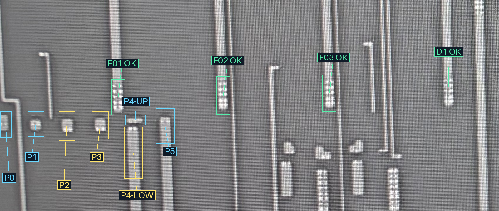
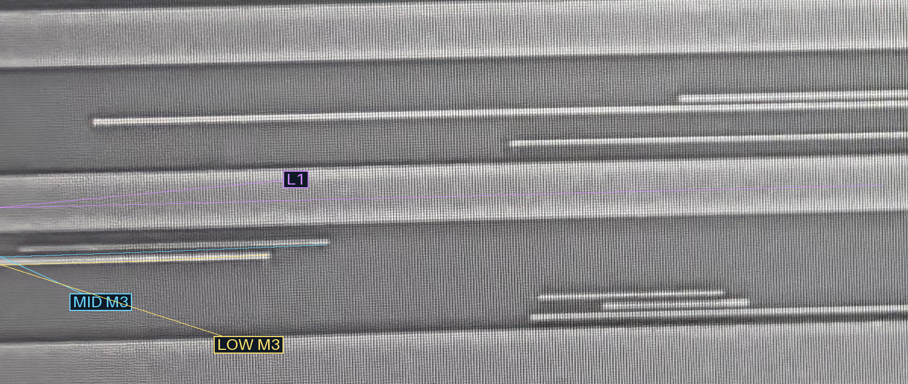
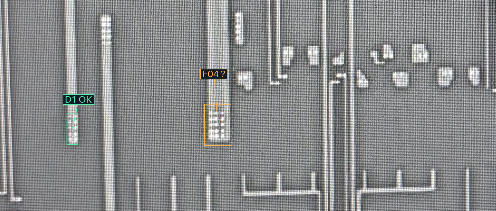
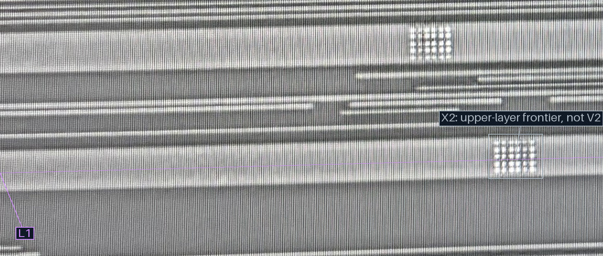
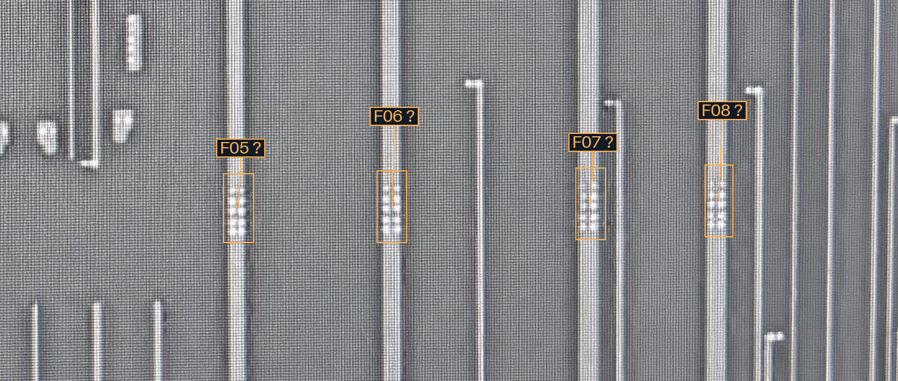
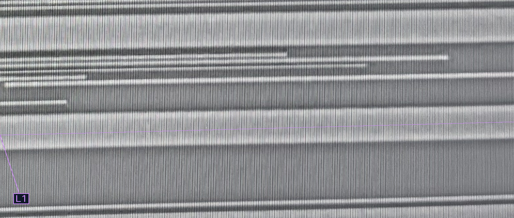
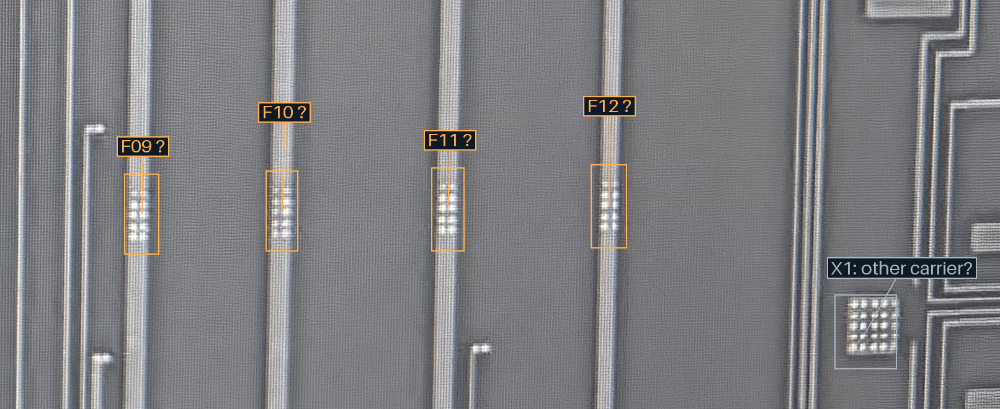
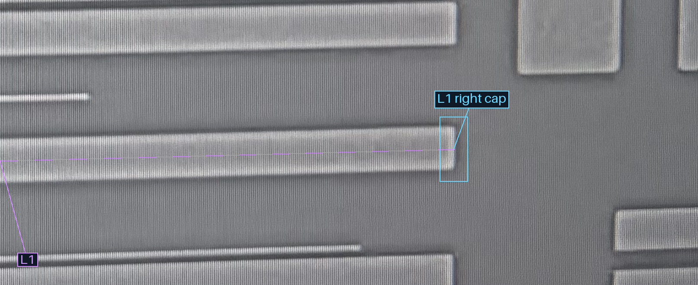

M2 · 打开完整原尺寸

M3 · 打开完整原尺寸

| 承载 | 已确认 M2 观察端 |
|---|---|
| L1 宽 M3 | F01、F02、F03（D1沿用既有批准） |
| 中间细 M3 · MID M3 | P0、P1、P4-UP、P5 |
| 最下方细 M3 · LOW M3 | P2、P3、P4-LOW |
这是局部接入关系；尚未追完下层端子，也不代表两根细M3在整网中必然不同网。
橙框“?”为未审候选，请判断是否均经V2接入紫色L1。有例外按编号说明即可。每根连续M2只计一条，不逐孔询问。
M2 · 打开完整原尺寸

M3 · 打开完整原尺寸

M2 · 打开完整原尺寸

M3 · 打开完整原尺寸

M2 · 打开完整原尺寸

M3 · 打开完整原尺寸

字号30源像素，深色底框与引线；宽图最低显示1400px，窄屏可横向滚动，保持周围上下文。